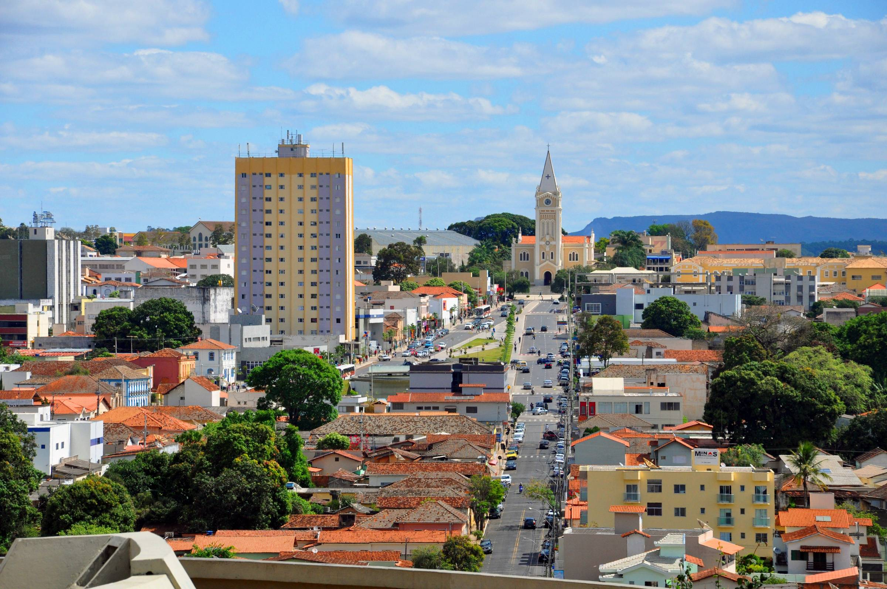

<app-nav [rota_mapa]="true"></app-nav>
<div class="carousel-item active">
    <!--Imagem 01-->
    
    <div class="carousel-caption d-none d-md-block h-75">
    <!--Conteudo Caroulseu-->
    <h1 class="fonte-carousel display-3">Collect Toxic Waste...</h1>
    <h1 class="fonte-carousel display-3">Transformando Araxá em um lugar melhor.</h1>
    </div>
</div>
<section class="mapa">
    <h3 class="tituloPrincipal">Locais de Coleta</h3>
    <p>Confira no mapa alguns pontos de coleta.</p>

    <div class="mapaConteudo">
      <iframe src="https://www.google.com/maps/embed?pb=!1m18!1m12!1m3!1d3758.3231024312254!2d-46.938727785477546!3d-19.613479733608614!2m3!1f0!2f0!3f0!3m2!1i1024!2i768!4f13.1!3m3!1m2!1s0x94b03653fdadf9cd%3A0xb521832748430c11!2sHospital%20Unimed%20Arax%C3%A1!5e0!3m2!1spt-BR!2sbr!4v1632866806886!5m2!1spt-BR!2sbr" width="1000" height="450" style="border:0;" allowfullscreen="" loading="lazy"></iframe>
    </div>
</section>
